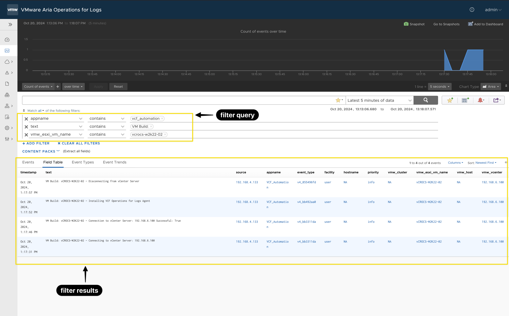
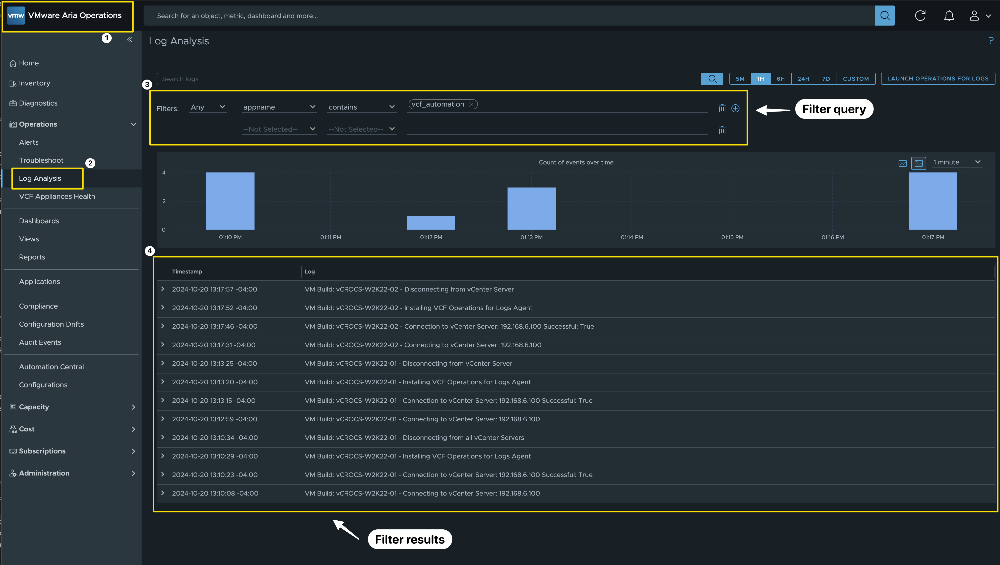
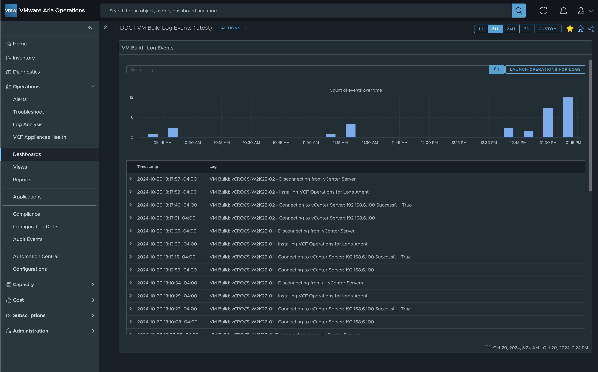
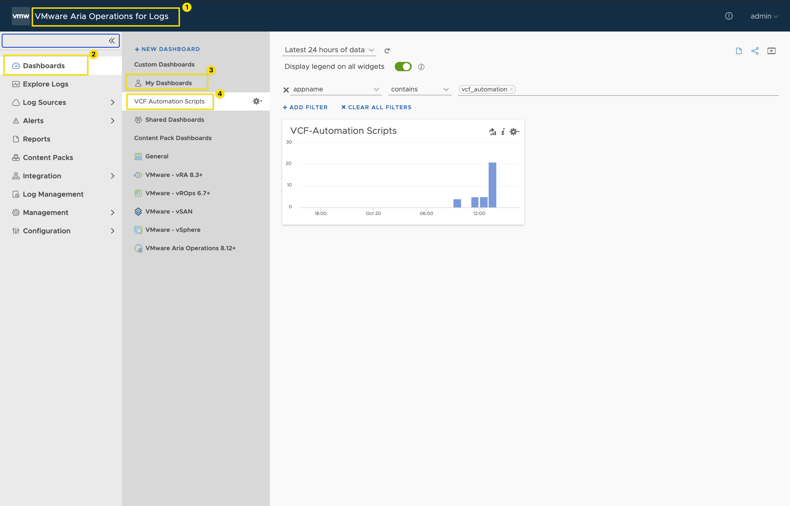

VCF Operations for Logs | How to use with Automation Scripts
How to send Automation Script Execution Log Events to VCF Operations for Logs.
Surround yourself with people that push you to do better. No drama or negativity. Just higher goals and higher motivation. Good times and positive energy. No jealousy or hate. Simply bring out the absolute best in each other. – Warren Buffett
**Note: VCF Operations and Operations for Logs 8.18.0 was used to create this Blog**
I’ve always felt that VCF Operations for Logs deserves more attention, it is a great product. With the Diagnostics Feature (Skyline Replacement) now included in VCF Operations, having VCF Operations for Logs installed (Requirement for Operations Diagnostics Feature) and configured for integration is a game changer. It excites me because now, many of the customers I work with will have access to VCF Operations for Logs in their environment, going beyond just collecting vCenter and ESXi Host logs.
When developing Automation Scripts and processes, I always prioritize execution logging. In the past, I relied on generating text-based log files. However, my latest approach is to route all script logging data directly to VCF Operations for Logs. Once you learn to format the log data in a way that makes it easily searchable, you’ll find yourself wanting to use VCF Operations for Logs for all your logging needs. It transforms log management into an efficient and streamlined process that enhances script visibility and performance monitoring.
In this blog, I’ll share some sample script files demonstrating how to send logging information to Log Insight. Sending log data to VCF Operations for Logs via the API is straightforward and requires minimal code. One of the key advantages is that no authentication is needed to send log data, which not only simplifies the scripts but also improves execution speed.
I’ve also included some sample filter queries that can be used within VCF Operations for Logs. If you’ve read my other blog posts, you’ll know I’m a big fan of creating custom VCF Operations Dashboards to present data in a user-friendly format. My goal is to ensure the data is formatted for quick visibility, allowing you to immediately spot issues that require attention. In this post, I’ll demonstrate how to use the Logs Widget within custom VCF Operations Dashboards to enhance your monitoring and troubleshooting experience.
Example Code:
Code details to make filter queries easier and exact:
- The parameters in the code are the fields used in VCF Operations for Logs event
- You will use these fields to filter events
- Fields in my example code
- Uri = # API Endpoint to send the event data
- priority = # Event priority (info, warning, error, etc.)
- facility = # Source generating the event (user, system, etc.)
- appname = # Application name logging the event
- hostname = # Hostname of the system (optional)
- vmw_esxi_vm_name = # Name of the VM or ESXi host (optional)
- vmw_vcenter = # Name of the vCenter (optional)
- vmw_cluster = # Name of the vCenter cluster (optional)
- vmw_host = # Name of the vCenter Host (optional)
- Text = # Custom text describing the event
- Think about how to filter when creating the log events. Don't just add events without making sure a filter can find the precise results.
# This is a Fuction to send log events to VCF Operations for Logs function Send-ApiEvent { Param ( # Parameters with default values, can be overridden as needed. [string]$Uri = 'https://vaol-vip.vcrocs.local:9543/api/v2/events', # API Endpoint to send the event data. url and port listed. [string]$priority = 'info', # Event priority (info, warning, error, etc.) [string]$facility = 'user', # Source generating the event (user, system, etc.) [string]$appname = 'VCF_Automation', # Application name logging the event [string]$hostname = 'NA', # Hostname of the system (optional) [string]$vmw_esxi_vm_name = 'NA', # Name of the VM or ESXi host (optional) [string]$vmw_vcenter = 'NA', # Name of the vCenter (optional) [string]$vmw_cluster = 'NA', # Name of the vCenter cluster (optional) [string]$vmw_host = 'NA', # Name of the vCenter Host (optional) [string]$Text = "Custom Script execution" # Custom text describing the event ) # End Param # Define headers for the REST API call, using JSON for content type and response format. $headers = @{ 'accept' = 'application/json' 'Content-Type' = 'application/json' } # End headers # Construct the JSON body for the API request using a here-string. $body = @" [ { "priority": "$priority", "facility": "$facility", "appname": "$appname", "hostname": "$hostname", "vmw_esxi_vm_name": "$vmw_esxi_vm_name", "vmw_vcenter": "$vmw_vcenter", "vmw_cluster": "$vmw_cluster", "vmw_host": "$vmw_host", "text": "$Text" } ] "@ # End Body # Send the POST request to the API endpoint within a try-catch block for error handling. try { # Invoke-RestMethod is used to send the API request and return the response. $response = Invoke-RestMethod -Uri $Uri -Method Post -Headers $headers -Body $body -SkipCertificateCheck # Output the API response if successful. Write-Host "API response: " -ForegroundColor Green $response } catch { # Handle any errors that occur during the request and output the error message. Write-Host "Error occurred: $($_.Exception.Message)" -ForegroundColor Red } # End try/catch } # Function End # Example usage of the Send-ApiEvent function. # Customize the message text, add relevant data to $text, and invoke the function. $text = "PowerShell: " + "A new process has been created with ID 9876" Send-ApiEvent -Text $text
# This is a example script to give you ideas on how to use the function listed above.
# Load the Syslog function script, which will be used for logging events via Aria Operations for Logs API.
. /Path-To-Script/aria-operations-for-logs-syslog-api.ps1
# Define the VM name and the script process description
$vmName = "vCROCS-W2K22-02"
$scriptProcess = "VM Build: " + $vmName
# --- Connect to vCenter ---
# Define the parameters for connecting to the vCenter Server
$ConnectVIServerParams = @{
Server = '192.168.6.100' # vCenter Server IP or FQDN
User = 'administrator@vcrocs.local' # vCenter Admin Username
Password = 'VMware1!' # vCenter Admin Password
Protocol = 'https' # Secure Protocol
Force = $true # Force connection even if already connected
}
# Log the connection attempt to Aria Operations for Logs
$text = $scriptProcess + " - Connecting to vCenter Server: " + $ConnectVIServerParams.Server
Send-ApiEvent -text $text -vmw_vcenter $ConnectVIServerParams.Server -vmw_esxi_vm_name $vmName
# Establish the connection to vCenter
$vCenterConnect = Connect-VIServer @ConnectVIServerParams
# Log successful connection status to vCenter
$text = $scriptProcess + " - Connection to vCenter Server: " + $ConnectVIServerParams.Server + " Successful: " + $vCenterConnect.IsConnected
Send-ApiEvent -text $text -vmw_vcenter $ConnectVIServerParams.Server -vmw_esxi_vm_name $vmName
# --- Add Your VM Build Steps Here ---
# Insert your VM build process code below. This section is a placeholder for any actions you will take on the VM during the build.
# Example Log Event - Add specific operations during VM build (e.g., software installation, configuration, etc.)
$text = $scriptProcess + " - Installing VCF Operations for Logs Agent"
Send-ApiEvent -text $text -vmw_vcenter $ConnectVIServerParams.Server -vmw_esxi_vm_name $vmName
# --- Disconnect from vCenter ---
# Log the disconnection attempt from vCenter
$text = $scriptProcess + " - Disconnecting from vCenter Server"
Send-ApiEvent -text $text -vmw_vcenter $ConnectVIServerParams.Server -vmw_esxi_vm_name $vmName
# Disconnect from the vCenter Server without confirmation prompts
Disconnect-VIServer -Server $ConnectVIServerParams.Server -Confirm:$false
Filter Examples:
- See first screen shot for a visual example
- appname contains vcf_automation
- text contains VM Build:
- vmw_esxi_vm_name contains vcrocs-w2k22-02
Screen Shots:
Screen Shot of the VCF Operations for Logs - Filter query and results:
Screen Shot of the VCF Operations Log Analysis - Filter query and results:

Screen Shot of the VCF Operations custom Dashboard using the Log Widget:

Screen Shot of a custom VCF Operations for Logs Dashboard:
- Define the filter to show the information you need.

RFC 3164 Code Example:
I often say there are many ways to achieve the same outcome. While researching for this blog, I came across examples of sending syslog data to VCF Operations for Logs using the RFC 3164 standard. I created a script, tested it in my lab, and it works well. Personally, I prefer using the VCF Operations for Logs API, but I recognize that others may have a use case for this approach. I’m sharing it here in hopes that it might be helpful to someone.
function Send-SyslogMessage {
Param (
[string]$IP = "192.168.6.94", # Default Syslog server IP
[int]$Port = 514, # Default Syslog server UDP port
[string]$Facility = "syslog", # Default Syslog facility
[string]$Severity = "info", # Default Syslog severity
[string]$Content = "No Content provided", # Default Message content
[string]$SourceHostname = "VCF-Automation", # Default Hostname
[string]$Tag = "PS-Script" # Default Tag for the message
)
# Map RFC 3164 facilities to numeric values
$facilityMap = @{
kern = 0; user = 1; mail = 2; daemon = 3;
auth = 4; syslog = 5; lpr = 6; news = 7;
uucp = 8; cron = 9; authpriv = 10; ftp = 11;
ntp = 12; audit = 13; alert = 14; clock = 15;
local0 = 16; local1 = 17; local2 = 18; local3 = 19;
local4 = 20; local5 = 21; local6 = 22; local7 = 23;
}
# Map RFC 3164 severities to numeric values
$severityMap = @{
emerg = 0; alert = 1; crit = 2; err = 3;
warn = 4; notice = 5; info = 6; debug = 7;
}
# Resolve facility and severity values
$facilityValue = $facilityMap[$Facility.ToLower()]
$severityValue = $severityMap[$Severity.ToLower()]
if (-not $facilityValue) { $facilityValue = $facilityMap["syslog"] } # Default to syslog
if (-not $severityValue) { $severityValue = $severityMap["info"] } # Default to informational
# Calculate the syslog priority value
$pri = "<" + (($facilityValue * 8) + $severityValue) + ">"
# Timestamp in RFC 3164 format
$timestamp = (Get-Date).ToString("MMM dd HH:mm:ss")
# Create the syslog message
$header = "$timestamp $SourceHostname "
$msg = $pri + $header + $Tag + ": " + $Content
# Display the message to be sent
# Write-Host "Sending syslog message: $msg"
# Convert message to ASCII bytes
$byteArray = [System.Text.Encoding]::ASCII.GetBytes($msg)
# Send the message via UDP
$udpClient = New-Object System.Net.Sockets.UdpClient
$udpClient.Connect($IP, $Port)
$udpClient.Send($byteArray, $byteArray.Length) | Out-Null
$udpClient.Close()
$output = "Syslog message sent to " + $IP + ":" + $Port
Write-Host $output
}
# Example usage of the function
Send-SyslogMessage -Content "Creating PS Script for Syslog"
Lessons Learned:
- VCF Operations for Logs is an excellent syslog solution, offering intuitive and user-friendly filtering tools.
- Always format events in a way that simplifies the creation of filters.
- Explore other products in your environment that can send log events to a syslog server. Make VCF Operations for Logs your company standard for syslog events and so much more...
- Leveraging VCF Operations for Logs can be a cost-effective solution if you have VMware Cloud Foundation licenses, as it comes included without any additional cost.
- A special thanks to Brock Peterson for providing valuable tips and tricks that contributed to the content of this blog. It’s a privilege to work alongside someone who consistently helps the team understand and master the full range of features in the VCF Automation and Operations products.
Links to resources discussed is this Blog Post:
I created a Google NotebookLM Podcast based on the content of this blog. While it may not be entirely accurate, is any podcast ever 100% perfect, even when real people are speaking? Take a moment to listen and share your thoughts with me!
vCROCS Deep Dive Podcast | VCF Operations for Logs | How to use with Automation Scripts
In my blogs, I often emphasize that there are multiple methods to achieve the same objective. This article presents just one of the many ways you can tackle this task. I've shared what I believe to be an effective approach for this particular use case, but keep in mind that every organization and environment varies. There's no definitive right or wrong way to accomplish the tasks discussed in this article.
Always test new setups and processes, like those discussed in this blog, in a lab environment before implementing them in a production environment.